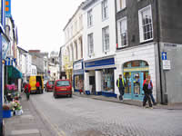
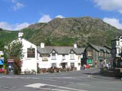
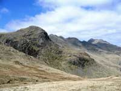
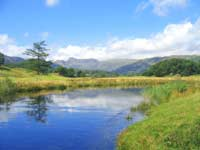
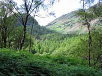
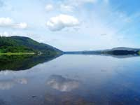
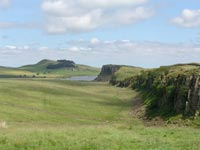
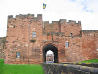

Today's walkers of the Cumbria Way have no fear of the fells unlike writers of several centuries ago who described the land as one of “inhospitable terror, barren, frightening and dreadful”. Even the sea came in for criticism as “desolate and wild, a sea without ships”. Since that time, the fells and surrounding countryside of Cumbria and the Lake District have become one of the most walked , climbed, and best loved tracts of land in Europe. The 70 miles of the Cumbria Way provides a generous slice of this beautiful holiday destination. It stretches between the old market town of Ulverston in the south and the historic regional capital of Carlisle standing close to Hadrians Wall in the north. Not only does the Walk lay along a line of distinctive scenic landmarks, but it is also a journey to encounter the character and traditions of Cumbria and its folk.
No matter if you choose to make the walk in daffodil time, the summer months or the red and gold colours of Autumn, there will be a village festival or event somewhere along the way. There's opportunity to linger and rest in many well known beauty spots and nearly always in the background stand the Langdale Pikes of which the late Alfred Wainwright said, “No other profile in Lakeland arrests and excites the attention more”. Beyond, are the Jaws of Borrowdale surrounded by Sergeants Crag, High Raise, and Eagle Crag, another of Wainwright’s favourites, and said by him to be such a beautiful fell, much admired, but seldom climbed. Langdale to Keswick is a physically demanding section of the Cumbria Way but the miles between Keswick and Caldbeck are the most remote. From Keswick, the route passes through Gleneraterra Beck Valley between the fells of Blencathra and Skiddaw. For those walking from south to north (as many do) they have a choice at the head of the valley between following the Eastern Route (high route) or the Western Route (low route). The low route is the least interesting but requires much less effort and is advisable in poor weather conditions. The high route progresses onwards to Caldbeck up and over Lingy Hill and High Peak, the highest point on the whole journey, which can be blanketed in dense mist and create difficulties in following the trail. The remaining section from Caldbeck to Carlisle is mostly flat and for a good deal of the way accompanies the River Caldew via the villages of Buckabank and Dalston before entering the built up areas of Carlisle and the generally agreed finishing / starting point of Carlisle Castle.
Advice for walkers
Check weather forecast for local conditions.
Wear colourful clothing and suitable footwear with treaded soles and firm ankle support.
Map and compass.
Is your mobile phone battery fully charged? Be aware of poor signal coverage in some locations.
Leave a plan of your start and finish points and contact details.
Take some sandwiches or a flask of soup and a drink.
Have a good meal before setting out.
Should you wish to contact a Mountain Rescue team in an emergency, call 999 and ask for police. The police will then alert the appropriate team for the area. Hearing and speech impaired people can send an emergency text message to 07786-208999 (Cumbria area) but enquire at the local police station before leaving.
Cumbria Way Route Information
Ulverston – Coniston. 15 miles.
Coniston – Langdale. 11 miles.
Langdale – Keswick. 16 miles.
Keswick – Caldbeck. 14 miles.
Caldbeck – Carlisle. 14 miles.
Maps:
OL 4, 5, 6, and 7.
Events and festivals along the route.
Travel Services
Pegasus Taxis & Travel for transport of your luggage to destinations along the route. This Bowness on Windermere based service also provides local and long distance journeys; airport transfers; wedding hire; courier work; hen & stag party hire; school runs and safe and secure luggage storage at their Bowness office premises. www.pegasustaxisandtravel.com Telephone 015394-48899 Fax 015394-44453 |
Ulverston
Ulverston is a busy thriving market town with all the social and business amenities expected to be found in a larger community. There's a good range of shops, cafés, restaurants and pubs, plus banks, Post Office, Tourist Information Centre and excellent passenger train and bus services.
An impressive sculpture, fashioned to represent a compass and a cairn, has been erected in the town centre to mark the beginning of the Cumbria Way Walk. Pre-walk accommodation and the surrounding areas are well equipped to meet the needs of those preparing to embark on the 70 mile trek north to Carlisle and many will provide a pack of sandwiches and a drink to sustain you on the way to the next stop.
More information can be found on our Ulverston Information page, and
a list of annual happenings in this “Festival Town” is shown on our Events Page. |
 |
Coniston
Coniston is reached over well used tracks and paths via the small hamlets of Broughton Beck, Gawthwaite, Blawith and Torver with a lakeside walk to complete the last few miles of the journey. There's not much scope for refreshments en-route except in Torver where walkers can rest and enjoy a well earned meal and drink in either of two old worlde pubs. Coniston, waymarked by the imposing presences of Coniston Old Man and the beautiful Coniston Water is a favourite gathering place for walkers and climbers from far and wide.
A wide variety of accommodation in Coniston is available within a mile or so of the town centre with a good selection of camping sites, bed and breakfasts, hotels and self catering from which to choose. |
 |
Nearby Attractions:
The Grizedale Forest - www.forestry.gov.uk/grizedale
Hill Top, Near Sawrey - The home of Beatrix Potter.
Tarn Howes. - A 2 mile walk to probably the most photographed feature in the Lake District.
Hawkshead - Said to be the prettiest village in the Lake District.
Beatrix Potter Gallery, Hawkshead.
Beacon Tarn - A much admired small stretch of water from where there are lovely views. |
Bus, Train and ferry services:
For details go to www.carlberry.co.uk
The Mountain Goat Bus Company
Cross Lakes Shuttle
Stagecoach Cumbria
Tourist Information Centre: Tel: 015394 41533 |
Coniston to Langdale
Ahead, and in view, stand the high fells of Pike O' Blisco, Pike O' Stickle and Harrison Stickle forming the classic contour of the Langdale Pikes. This 11 mile section of the Cumbria Way Walk fully conveys the magic and the inspirational qualities of the Lake District as the trail proceeds via a series of traditional Cumbrian hamlets and small villages on the approach to the Langdale Valley.
“The valley rings with mirth and joy” wrote William Wordsworth in the opening line of “The Idle Shepherd Boy”.
Skelwith Bridge
Skelwith Bridge occupies a peaceful riverside position alongside the River Brathay and close to the tumbling waters of Skelwith Force with room to sit and relax on the wooded river banks. Food and drink are available in the nearby 3 Star Hotel or in a newly established tearoom with adjoining gift shop. |
 |
Places to see:
Coppermine Valley. Coniston.
Tarn Hows. Near Coniston.
Skelwith Force.
Elterwater Lake - Tranquil setting with great views of the Langdale Pikes.
Blea Tarn - A much photographed stretch of water looking toward the Langdale Pikes.
Stickle Tarn - Feeds the Dungeon Ghyll Waterfall.
Lingmoor Tarn - A small secluded tarn.
Wrynose Pass - Steep winding spectacular ancient Roman road. |
Elterwater
Elterwater is a firm favourite as a visitor destination and gathering place for walking and trekking enthusiasts.
It's a typically picturesque Langdale Valley village of neat stone cottages, a well stocked shop and a welcoming pub.
Chapel Stile
Chapel Stile has often been described as one of the most beautiful settings to be found in the Lake District. Tearooms, a shop and a cosy pub provide well for the visitor. |
 |
Dungeon Ghyll
Dungeon Ghyll is a small community resting in the much loved area of the Langdale Valley's high and low level walks, treks and hikes, and close to the Lake District's most impressive waterfall cascading down from Stickle Tarn.
Camp sites, bunk barns, bed and breakfasts, guest houses, self catering and hotels are available in this sector of the Cumbria Way. However, this part of the region is one of the Lake District’s most visited holiday destinations, especially in the summer and autumn months. Those walking the Cumbria Way and wishing to stay close to the route are advised to make an early accommodation booking and check if single overnight accommodation stays are available.
Bus Services:
Service 516 operates between Ambleside and Dungeon Ghyll via Elterwater and Chapel Stile.
Rail Services:
Nearest station, Windermere. |
Langdale to Keswick
It's not too far after leaving Langdale and crossing the Stake Pass, that the walker enters the Borrowdale Valley. The Parish of Borrowdale includes the villages of Seatoller, Stonethwaite, Rosthwaite, Grange, and the hamlets of Watendlath and Seathwaite. A newspaper article of 1880 reported a rainstorm during which, “the road approaching Rosthwaite was inundated at the lower parts fully to the depth of a yard and a quarter, and foot passengers had to take advantage of the accommodation afforded by the wall which is covered by flat stones for that purpose”. Borrowdale holds the record for the heaviest rainfall in England, but visitors can rest assured (and in comfort) they no longer need to rely on the accommodation offered by a stone wall.
The Borrowdale Valley provides a large choice of holiday accommodation comprising of camp-sites, camping and bunk barns, bed and breakfasts and hotels clustered in and around the villages and hamlets.
Rosthwaite, the largest of the communities, and Stonethwaite, are well used stopping points on the Cumbria Way to pause for refreshments and take a breather. A small detour away from the recognised route is required to include the village of Grange, but it is well worth the effort. There's a shop, pub, tearoom and café in a lovely riverside location and the opportunity to picnic by the waters and dip and cool weary feet.
Keswick, standing next to the beauty of Derwentwater, is a town largely given over to the tourist industry and quite rightly so. It has a plentiful number of retail shops, food stores, Banks, Post Office, Tourist Information Centre and regular bus services connecting to all parts of the country.
The nearest Railway Station is Penrith on the West Coast main line between London and Scotland.
|
 |
Places of Interest:
Castlerigg Stone Circle - Prehistoric monument of 38 stones believed to have been used for religious purposes.
The Bowder Stone - A massive 2000 ton boulder which was possibly swept down from Scotland during the Ice Age.
Watendlath - Hamlet and small tarn reached via the much photographed Ashness Bridge.
Level walks around the shores of Derwentwater.
The Theatre by the Lake: www.theatrebythelake.co.uk
Keswick Mining Museum: www.keswickminingmuseum.co.uk
Pencil Museum: www.pencilmuseum.co.uk
Bus Services:
The Borrowdale Rambler. Service 78. Keswick to Seatoller via Derwentwater Lakeshore, Lodore, Grange in Borrowdale and Rosthwaite.
The Honister Rambler. Service 77 / 77A. Takes in Portinscale, Catbells, Grange in Borrowdale, Seatoller, Honister Slate Mine, Buttermere, Lorton and Whinlatter Forest.
The Caldbeck Rambler. Service 73 / 73A. A circular route from Keswick to Caldbeck. The 73 goes via Applethwaite, Mirehouse, Dodd Wood, Bassenthwaite Village, Uldale and Ireby to Caldbeck. The 73A returns to Keswick via Hesket Newmarket, Mungrisdale, Threlkeld and Castlerigg Stone Circle.
The Osprey Bus. Service 74 / 74A. Keswick to Mirehouse / Dodd Wood. This is a journey to explore Bassenthwaite Lake with a stop at Whinlatter Centre where the Ospreys can be seen, Thorthwaite Galleries, Dubwath Wetland Nature Reserve, Trotters World of Animals, Mirehouse and Dodd Wood.
Stonethwaite Post Office:
Opening times. 9.30am – 12.30pm. Wednesday, Thursday, Friday & Saturday.
9.30am – 5pm. Tuesday.
9.30am – 1pm. Monday.
Cash Withdrawal Facility. Tel: 017687 77304. |
Keswick to Caldbeck
From Keswick the walker has the choice of following either the high or low level route to Caldbeck. The low level passes through the hamlets of Orthwaite and Longlands standing at the foot of Skiddaw whose not too strenuous ascent rewards the climber with yet another wonderful Lakeland panorama. Orthwaite and Longlands consist of only a few scattered buildings but a slight deviation from the recognised route takes you to the village of Bassenthwaite. Here, you can take a meal or snack in the congenial atmosphere of a centuries old coaching inn. There's a good range of holiday homes, bed and breakfast accommodations and some which offer barn style over-nighters.
You may wish to break the journey and visit the 17th C Manor House and beautifully landscaped grounds of Mirehouse with paths leading to the 13th C Church of Saint Bega on the shore of Bassenthwaite Lake.
Those taking the high route over the 658 metres of High Pike will find the intermediate milestones of a welcoming Youth Hostel and an old shooting hut which provides a rudimentary shelter atop Great Lingy Hill. You are now well into the Northern Fells and almost within sight of Caldbeck. Here again, a little way off the trail, but only one and a half miles from Caldbeck, stands the small town of Hesket Newmarket. It's an immensely popular destination for walkers and climbers who come to roam the wide open spaces of the surrounding fells. It's also a waymark on the Reivers Cycle Route. All types of holiday accommodation is available in and around the town plus a village shop / post office, tea rooms and a pub serving the well appreciated locally brewed real ale. www.hesketbrewery.co.uk |
 |
Caldbeck
A beautiful well kept Cumbrian village often visited but never over-crowded and where the visitor can unwind in the remoteness and rugged beauty of the district. Several well known walking and cycling routes meet here including the Reivers Cycle Route and the Coast 2 Coast. There is a good range of Caldbeck holiday accommodation and the surrounding communities of Hesket Newmarket, Uldale, Millhouse, Boltongate, Ireby, Wigton, Sebergham, Hutton Roof and Brackenthwaite. For more information visit our Caldbeck information page.
The Post Office is situated in the village store.
Open Monday – Friday 9am – 5.30pm. (closed for lunch 12.30-1.30) Saturday. 9am – 12.15pm.
Village Store - Open Monday – Saturday 8am-6pm and Sunday 9am - midday for the sale of groceries, wines, spirits, beers, sandwiches, newspapers and much more.
Bus Services - Operate between Caldbeck, Carlisle and Penrith and calling at some of the surrounding villages. For details go to www.carlberry.co.uk or www.stagecoach.com
Train Services - Nearest station is the unmanned Dalston on the Cumbria Coast Line.
Caldbeck Community website: www.caldbeckvillage.co.uk |
 |
Caldbeck to Carlisle
The route is almost completed and the walker leaves the Northern Fells and enters the gentle rural landscapes on the edge of the Solway Plain. The first community of any size is the village of Welton which is included in the Parish of Sebergham together with the hamlets of Nether Welton, Churchtown and Warnell. Dalston follows next. It is a large village 4 miles from Carlisle with shops, Post Office, a request stop railway station and frequent bus services to and from Carlisle. This sector is an area well known for its walkers, cyclists, hikers and horse riding trails, many of which lead to the World Heritage Site around Hadrians Wall. There are all categories of hotels, bed and breakfasts, self catering, caravan and camping sites and hostel accommodation on offer with schemes of “walkers welcome”, “cyclists welcome”, “families”, “pets”.
Carlisle of course is a city providing all business and social amenities and many places of historical interest. On arrival you may wish to call at the Tourist Information Centre and register your completion of the Cumbria Way in the Route Log book.
Dalston Community website: www.dalston.org.uk
Trails and Walks: www.reivers-guide.co.uk or www.bordereiverstrail.co.uk |


|